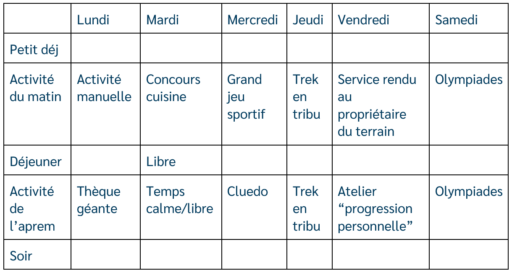
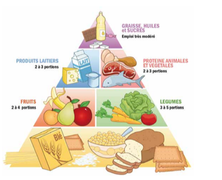

<div class="container">
  <div id="page1">
    <div  >
      <h1>L’intendance d’une aventure gauloise, pas que de la cervoise</h1>

      <h2> Pour bien commencer : </h2>
      <p>
        A quoi ça sert de manger équilibré?</br>
        Les chercheurs et les médecins se sont rendus compte qu’une alimentation équilibrée et variée permet de rester
        en bonne santé et limite les risques de maladies chroniques (diabète, cholestérol…).</br>
        C’est donc pour ça que c’est si important et qu’il faut aussi faire de l’exercice physique pour rester en
        forme.</br>
      </p>
      <p>
        Toutefois, ce n’est pas si facile, en effet, il faut adapter les repas selon les activités, plus de féculents
        avant une grosse activité sportive...<br /></br>
      </p>
      <h2> Déroulement : </h2>
      <p>
        Ton objectif est donc de remplir le tableau suivant en proposant des repas équilibrés et adaptés :<br />
      </p>
      
      <br />
      <p>Pour t’aider :</p>
      <p>
        Les menus sont équilibrés s’ils comptent : </br>
      </p>
      <ul>
        <li>une viande par jour</li>
        <li>des légumes</li>
        <li>un laitage</li>
        <li>des fruits !</li>
      </ul>

      <p>Le tout en fonction de l’activité prévue et/ou passée bien sûr.</p>

      <p>Notre corps a besoin :<p>
          <ul>
            <li>de lipides et de glucides (sucres lents) qui donnent de l’énergie,</li>
            <li>de protéines pour la fabrication et le renouvellement des cellules,</li>
            <li>de fibres pour faciliter le transit intestinal,</li>
            <li>de minéraux et de vitamines pour la croissance et la vitalité.</li>
            <li>Mais aucun aliment n’a à la fois, des lipides, des glucides, des protéines, des fibres, des minéraux et
              des vitamines!</li>
          </ul>
          <p>
            Il faut donc choisir des aliments des différents groupes.
          </p>
          <br />
          <p>
            Pour finir :
          </p>
    </div>
  </div>